Calendarios de siembra
Calendarios ilustrados de siembra y plantación para The Garden People.
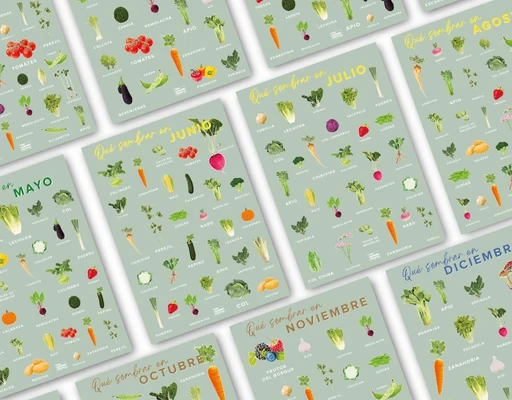
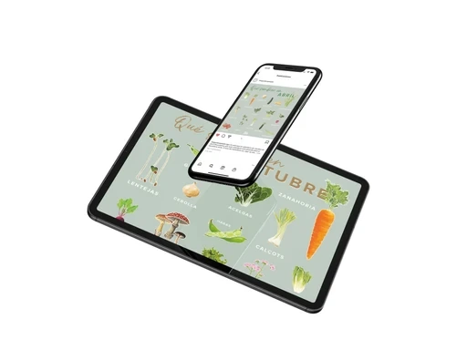
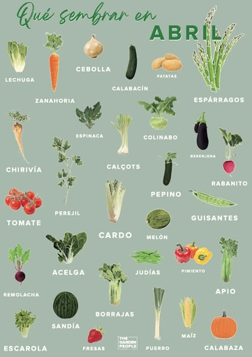
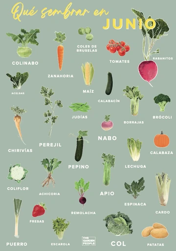
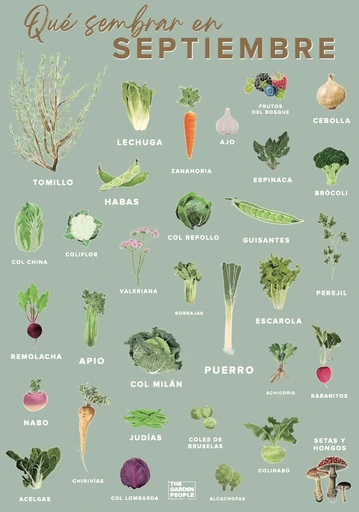
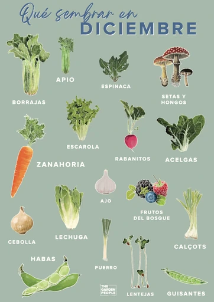
Esto no es un caso de estudio: es una pincelada de proyectos que hice como diseñadora gráfica e ilustradora y que forman parte de mi trayectoria.
Calendarios ilustrados de siembra y plantación para The Garden People.






Manuales de instrucciones de productos de jardinería para The Garden People: invernaderos y programadores de riego.
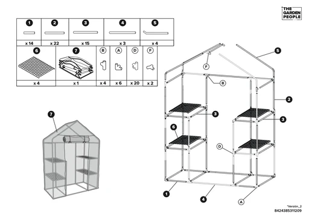
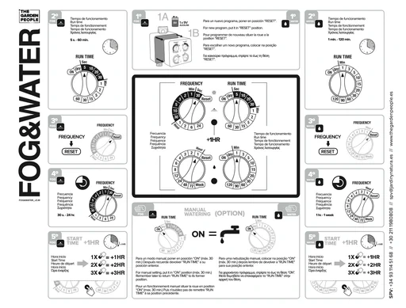
Frases para el contenido de Instagram de The Garden People.
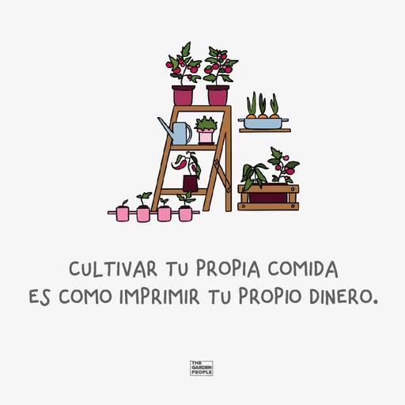
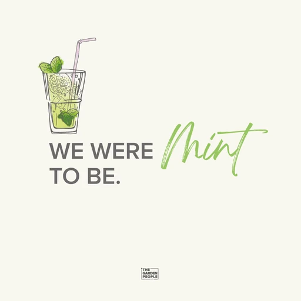
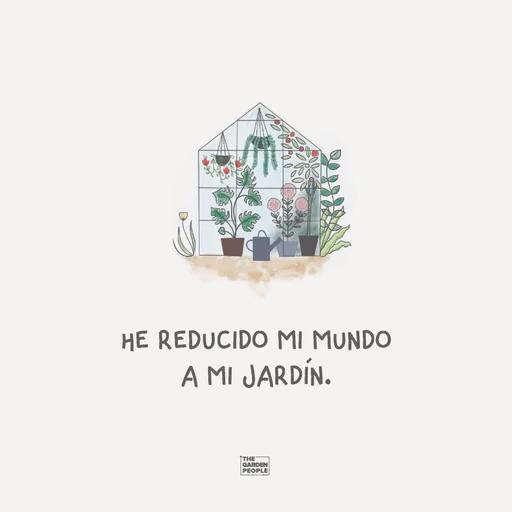
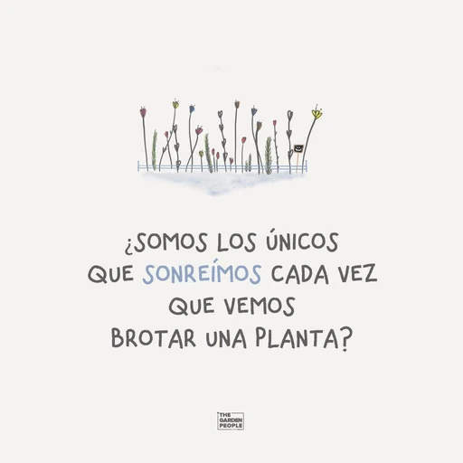
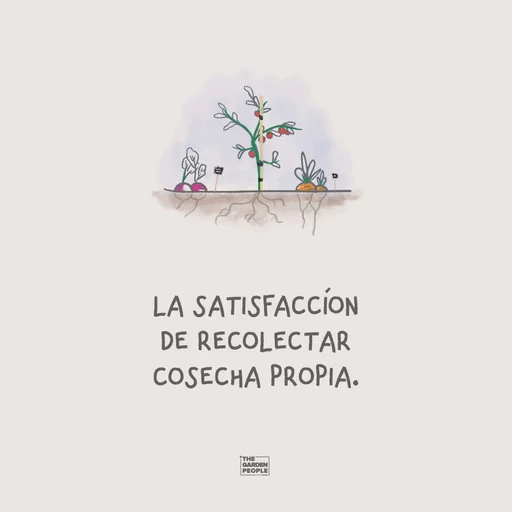
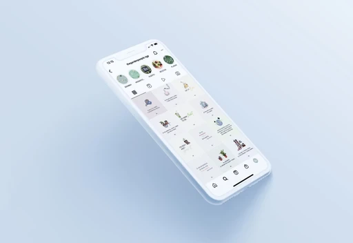